Monthwise user manual
A short guide to the home finance app. All screenshots show made-up data.
1. Getting started
Use the menu on the left to move between screens. The button next to the logo collapses the menu to icons. Set the app up once, in this order:
- Settings → Cards and accounts: add your bank accounts and payment cards. Mark your main current account as Primary and give it a starting balance so balances match your bank.
- Settings → Recurring bills: add the bills that arrive every month (electricity, internet, building reserve…).
- Loans: add your loans and leases once; their monthly payments then appear on their own.
- Month → Add input: add your salary as a Recurring input so it shows up every month.
Amounts are in euros. Anything Monthwise can calculate (installments, loan payments, card payments, contributions) is calculated for you and only needs to be ticked off.
2. Dashboard
The home screen answers “how is this month going?”.
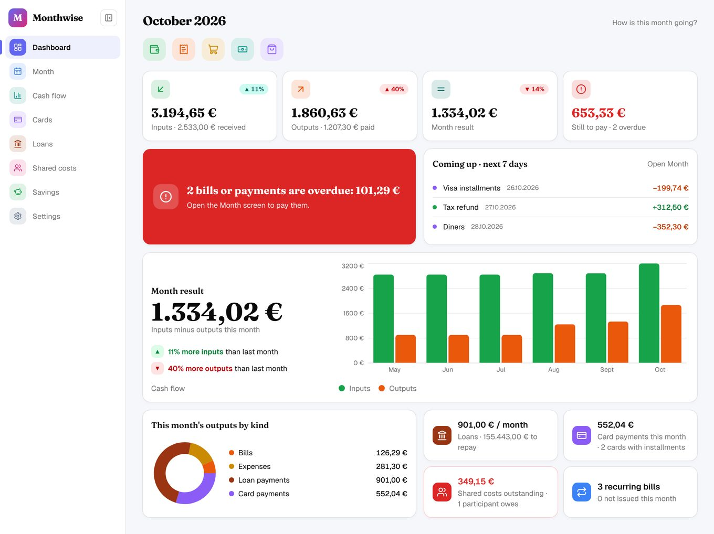
- Quick add buttons under the title: add an input, bill, expense, cash withdrawal or card purchase.
- Four tiles: inputs (and how much is received), outputs (and how much is paid), the month result, and what is still to pay.
- Red banner: appears only when something is overdue. Open the Month screen to pay it.
- Coming up: payments and inputs due in the next 7 days.
- Charts: inputs vs. outputs of the last six months and this month's outputs by kind. The tiles at the bottom link to loans, cards, shared costs and recurring bills.
3. Month
The working screen: everything that comes in and goes out in one month. Use the arrows next to the title to move between months.
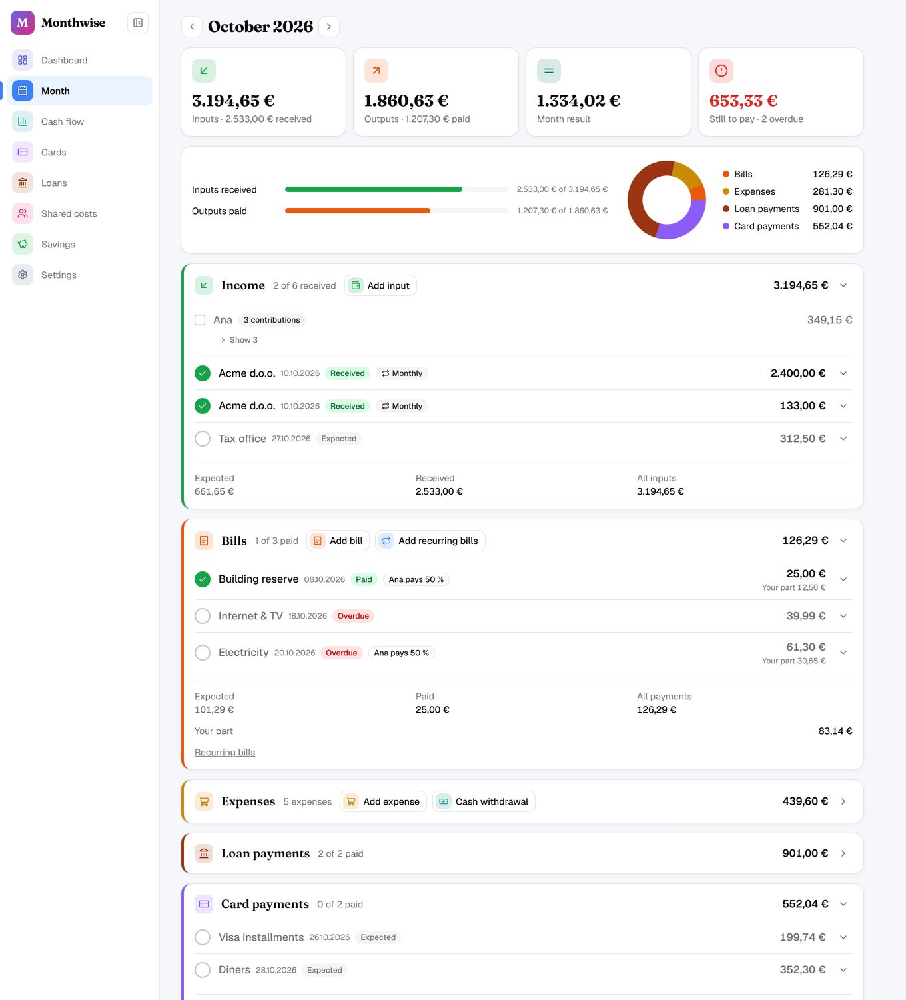
- Tick the circle in front of a row to mark it Received or Paid. Overdue rows are marked in red.
- Income: Add input for salary and other inputs. Contributions from people who share costs with you are grouped under their name.
- Bills: Add recurring bills creates this month's bills from your recurring list; open a bill to enter the amount and dates once it arrives. Add bill adds a one-off bill.
- Expenses: one-off spending such as groceries. Cash withdrawal records cash taken from an account.
- Loan payments and Card payments are filled in automatically from your loans and card purchases.
- Click a row's arrow to see details and to edit or delete it.
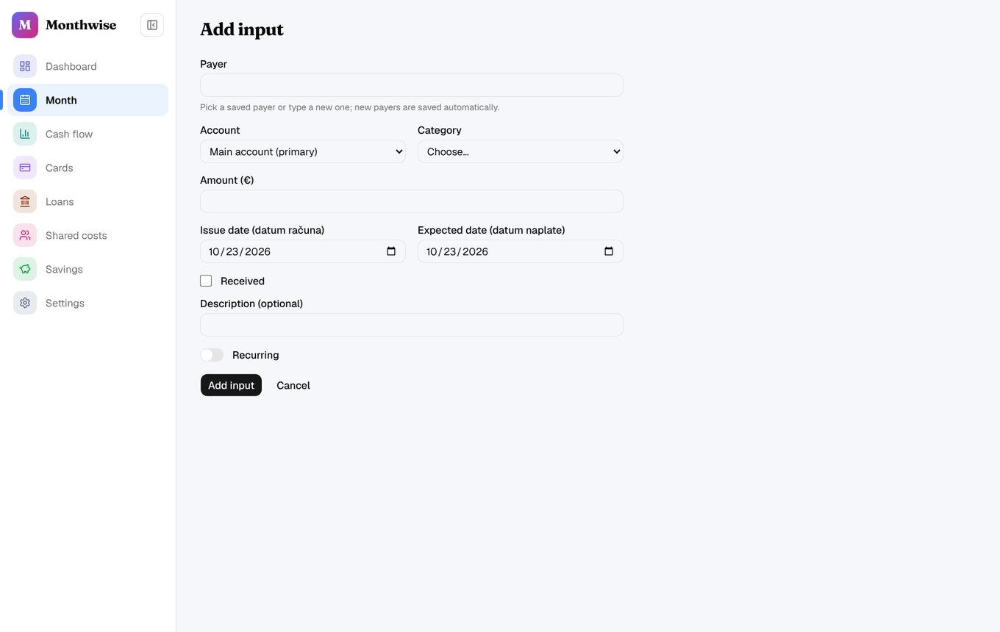
A bill or expense paid with a credit or charge card is not taken from your account straight away: it becomes part of that card's next card payment.
4. Cash flow
Shows inputs and outputs over time: This month (day by day), Last 12 months or This year. Use Filters to narrow by payer, account or category, and Show as table for the numbers. Click a month in the list for its monthly report.
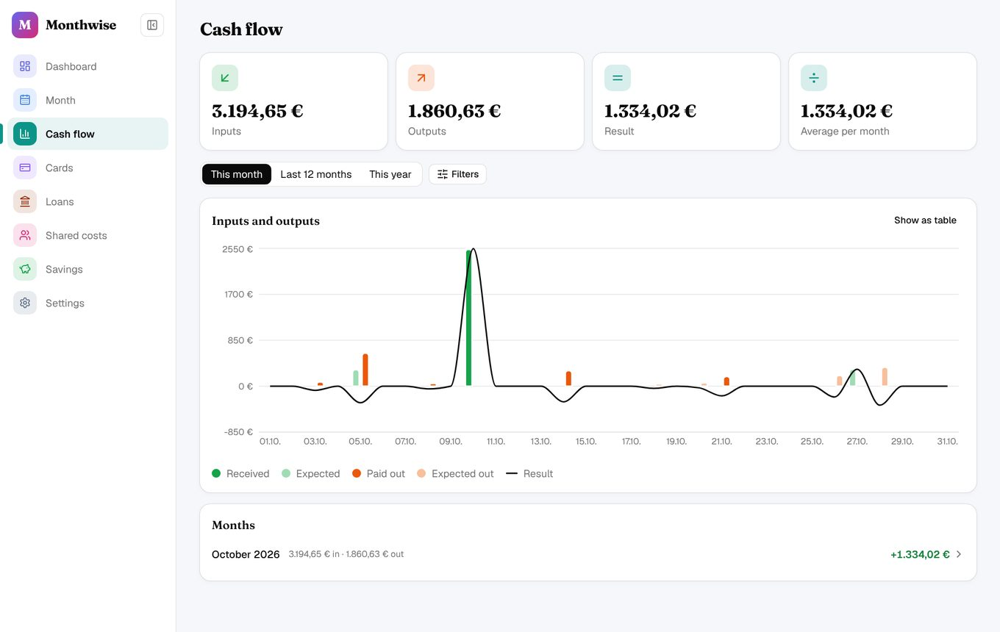
5. Cards and installments
The Cards screen shows the balance of each account now and at the end of the month, and every card that allows installments.
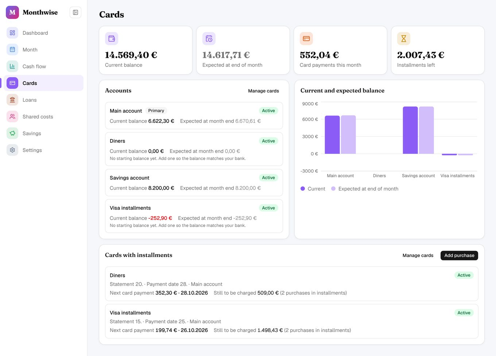
- Add purchase: choose the card, amount and date. Turn on In monthly installments and set the number of installments; Monthwise spreads the amount over the card payments.
- Open a card to see its upcoming card payments month by month and its purchases with what remains to be charged.
- A card payment is ticked off as paid on the Month screen or on the card itself.
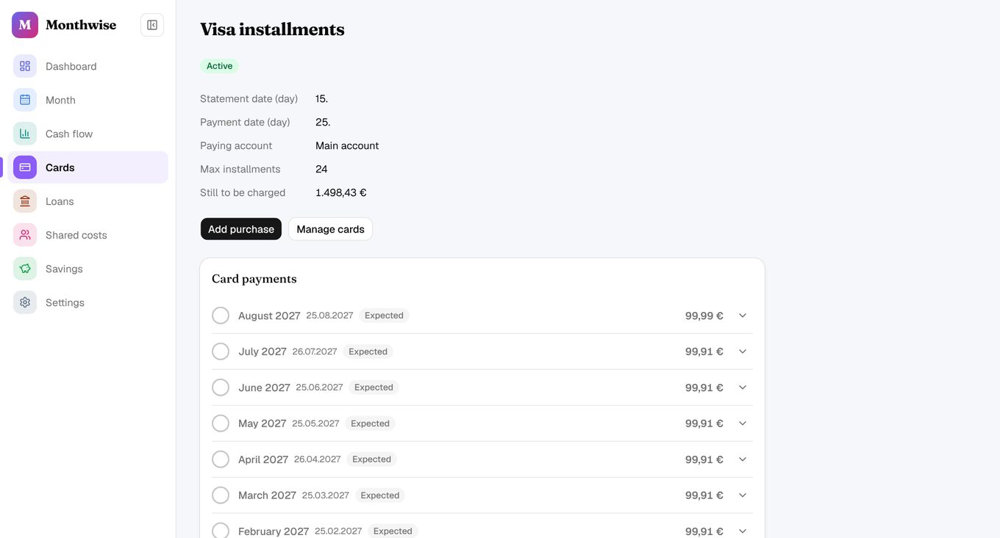
6. Loans and leasing
All bank loans and leases with monthly payment, progress and what is left to repay. Add loan asks for the lender, start month, payment day, monthly amount and number of payments (and a residual value for a lease).
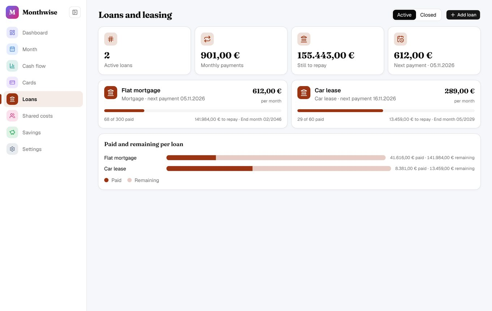
Open a loan to see each payment. Add payment change records a new monthly amount or payment day from a given month (e.g. after a rate change). Close loan ends a loan that is paid off early.
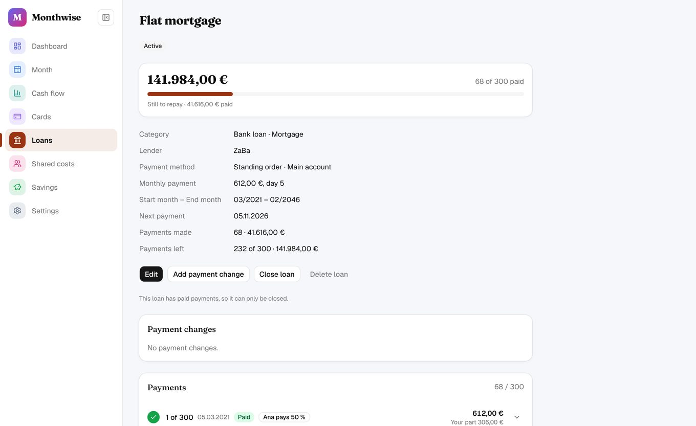
Payments by standing order are marked paid automatically on their date. Payments by bill wait until you tick them.
7. Shared costs
For costs you split with someone (a partner or flatmate). Add the person under Add participant, then set their share on a recurring bill or loan. Each month Monthwise calculates what they owe you and lists it here and as an expected input on the Month screen. Tick a contribution when you receive the money.
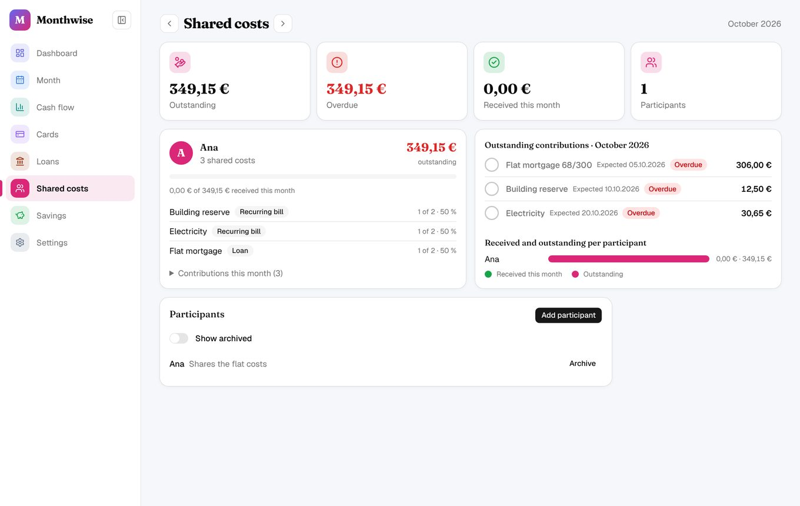
8. Settings
Lists the app uses everywhere: cards and accounts, payers, input categories, expense categories, loan categories and recurring bills. Add your own entries next to the starting ones. A category that is already in use cannot be deleted; hide it instead.
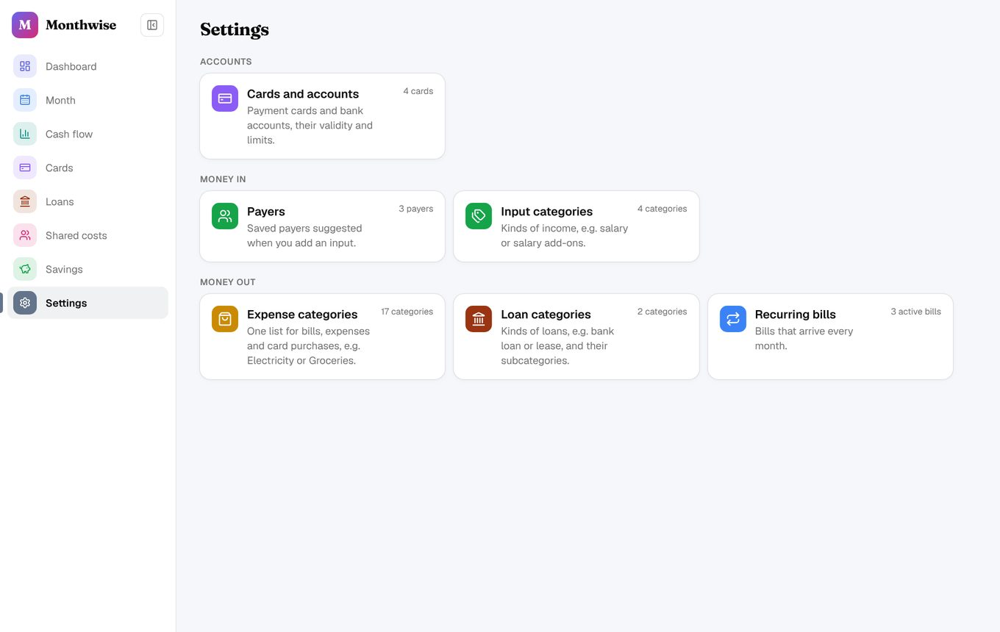
Card numbers and IBANs are stored encrypted and shown only on request.
9. On the phone
Monthwise works in a phone browser too. The menu moves to a bar at the bottom of the screen; everything else works the same.
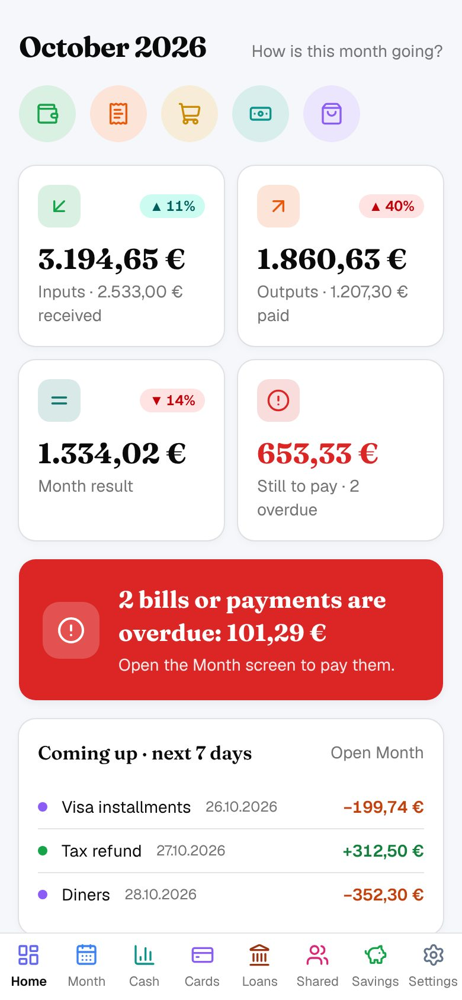
The Savings screen is not built yet.